1640 Alum Rock Ave · San Jose
Custom hand-shaped hats. Western & work boots.
A family-run shop in San Jose since 2023, with a wide selection of western and workwear essentials. Reliable gear you can count on.
Red Rock Western Wear es una tienda familiar en San José desde 2023. Se habla español.
5.0 39 Google reviews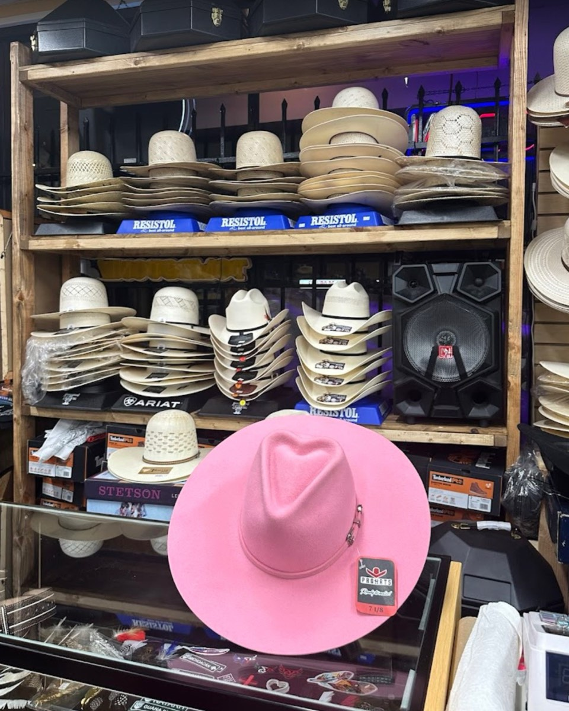
- Se habla español
- Custom hand-shaped hats
- Western & work boots
- Apple Pay, contactless & cards
- Parking lot in front
Sombreros · Hats
Your hat, shaped by hand
Straw or felt, off the wall or one you already own. Our hat experts will help you find the perfect fit, shape and style.
Ofrecemos sombreros personalizados, limpieza y les damos horma al sombrero.
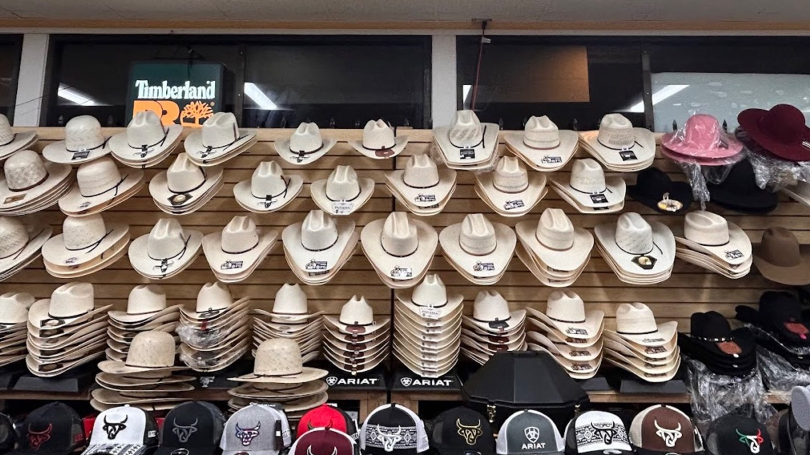
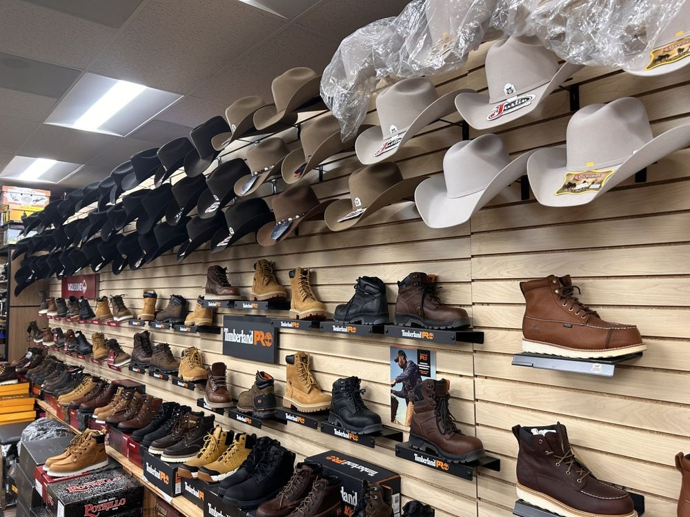
Now an American Hat Company retailer
Custom hand-shaped hats Sombreros personalizados
Custom shaped. Perfect fit. Built to stand out. Tell us the look you're after and we'll shape the crown and brim to match.
Open-crown hats Copa abierta
If you've seen it on TV or online, we can make you any hat you want.
Cleaning & reshaping Limpieza y horma
Bring in a hat that's lost its shape and we'll clean it and bring it back.
Hat branding
Ask about branding and the other ways to make your hat truly yours.
Fitting & sizing Medida
We'll size you properly, straw or felt.
“My hats get beat up when I’m dancing in them. They did a great job, reshaping them and bringing them back to life!”
Mark Blaszczyk · Google review
| Head | 22″ | 22⅜″ | 22¾″ | 23⅛″ | 23½″ | 23⅞″ |
|---|---|---|---|---|---|---|
| Hat size | 7 | 7⅛ | 7¼ | 7⅜ | 7½ | 7⅝ |
Botas vaqueras · Cowboy boots
Boots for men & women
Justin, Durango, Tony Lama, Dan Post, Laredo, Los Altos, Corral and more. Men's and women's cowboy boots, botines, and exotic boots, all on the shelves to try on.
Ofrecemos una amplia selección de botas vaquero/a y de trabajo.
How a boot should fit ↓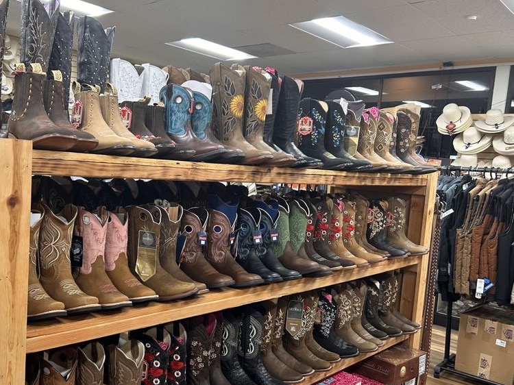
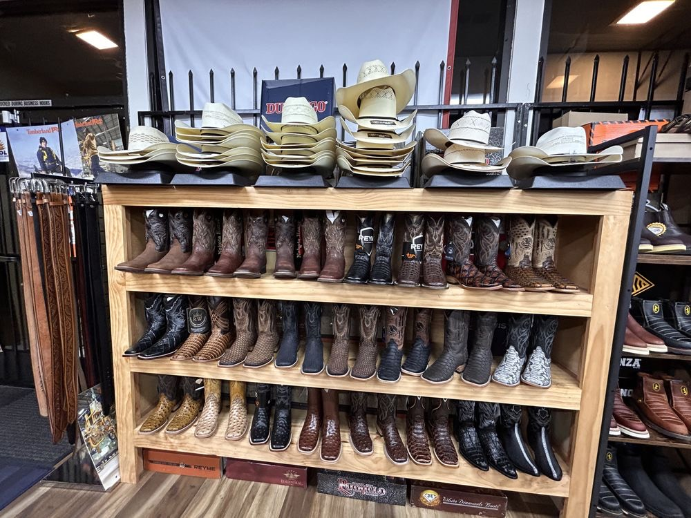
Choosing a pair
Toe, heel & width
Three separate choices. Here's what each one means, so you know what to ask for.
La horma Toe shape
The most room across the toes. A favorite for work boots and wide feet.
Tapers like a snip toe but finishes in a soft, rounded point.
Narrow, cut square at the tip or drawn to a point. The point is extra leather, not extra room.
The traditional riding toe. Slips in and out of a stirrup easily.
El tacón Heel
Tall and angled under the boot so it catches the stirrup. Made for riding.
Squarer and a little lower. Still western, easier on pavement and a long night of dancing.
Low and flat. The closest a cowboy boot gets to an everyday shoe.
One flat sole from heel to toe. Common on work boots for standing all day.
El ancho Width
- Men's: D is the standard width, EE is wide, and many work boots come in EEE.
- Women's: B is the standard width, C is wide.
- If the ball of your foot rolls over the edge of the sole, try a wider width, not a longer size.
Cómo se siente How it should feel
- Snug over the instep. That's what holds a boot on. Expect a firm pull and a little pop as your heel drops in.
- A little heel slip. Some lift at the heel is normal in a new boot and eases as the sole breaks in.
- Ball of the foot at the widest point, where the boot is meant to bend.
- Toes free. Room to wiggle, never pressed against the end.
- Try them on later in the day, with the socks you'll actually wear.
Botas de trabajo · Work boots
Work boots, a whole wall of them
Timberland PRO, Wolverine, Irish Setter, CAT and Thorogood, in the same store as the hats and cowboy boots. Come try them on.
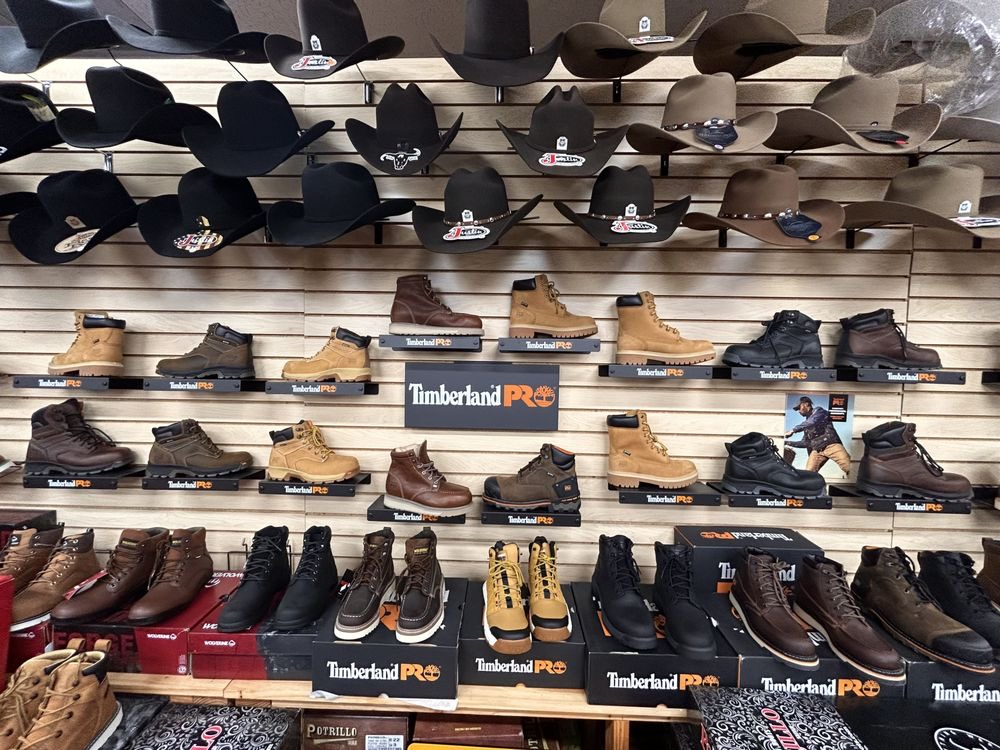
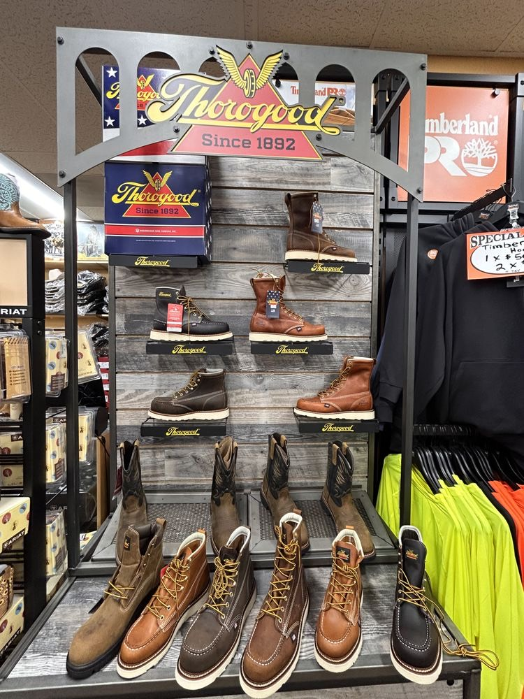
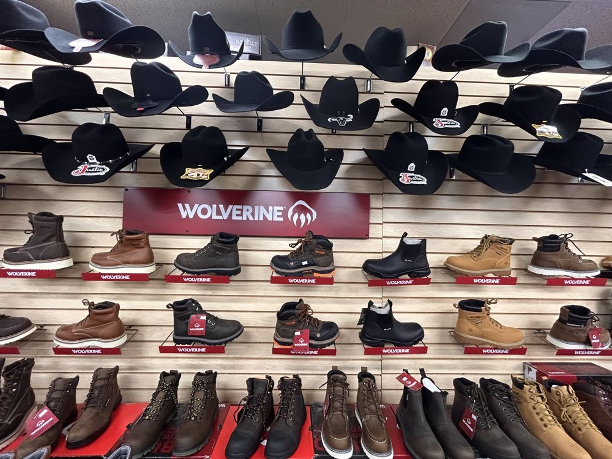
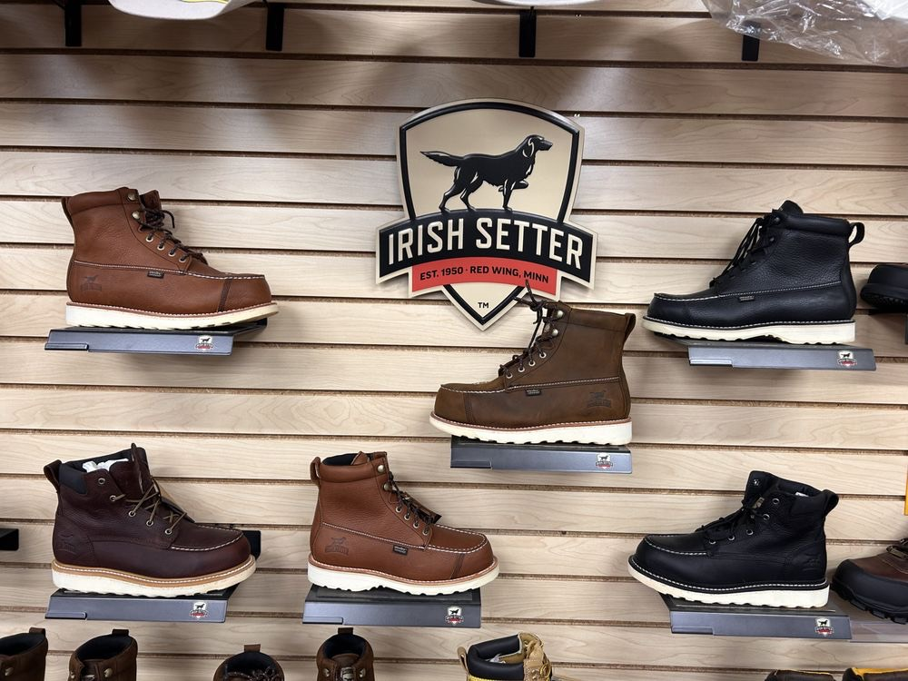
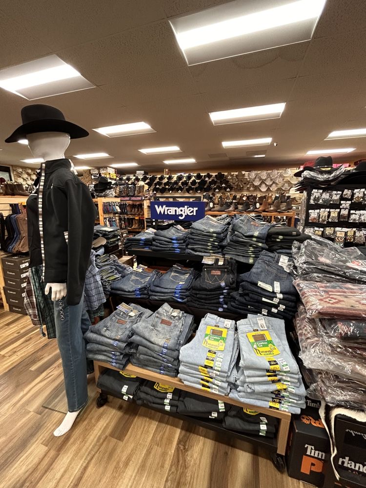
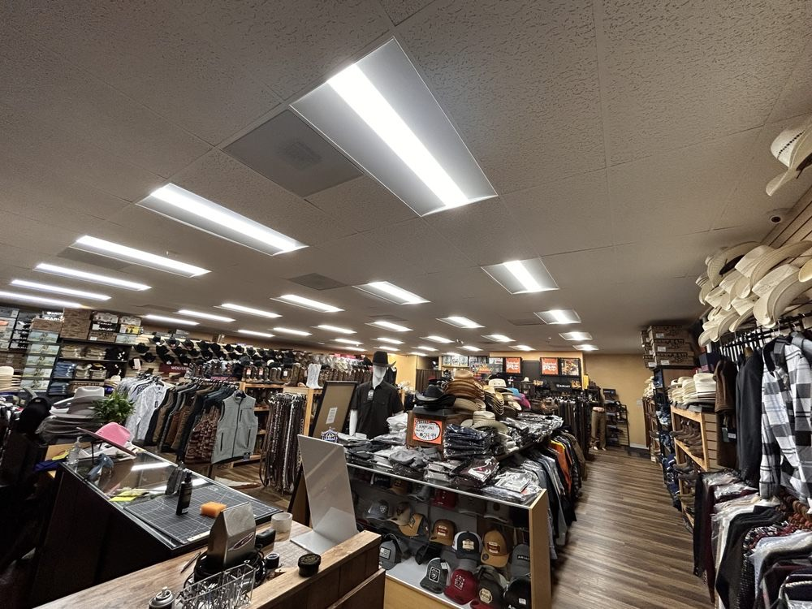
Ropa · Jeans & more
Jeans, shirts, belts & buckles
Wrangler, Cinch and Rock and Roll Denim jeans. Western shirts, jackets and vests. Belts and buckles, caps and bandanas. And head-to-toe western outfits for women, from the hat down to the boots.
Marcas · Brands in the store
Sombreros
- American Hat Company
- Stetson
- Resistol
- Rodeo King
- Serratelli
- Tombstone
- Cuernos Chuecos
Botas
- Justin
- Durango
- Tony Lama
- Dan Post
- Laredo
- Los Altos
- Corral
Trabajo
- Timberland PRO
- Wolverine
- Irish Setter
- CAT
- Thorogood
Ropa
- Wrangler
- Cinch
- Rock and Roll Denim
…and more. Looking for something specific? Give us a call.
“We had the absolute best experience here. Daniel was incredibly knowledgeable and helped me find the perfect hat! They offer shaping and branding as well which was a nice surprise”
Georgina Otvos · Google review
“I came in for a custom shaped hat. I wasn't completely sure what I wanted, but he took a ton of time helping and answering all my questions. Outstanding customer service. I walked away with two hats, custom fitted and shaped, and my wife loves how they look on me. I highly recommend, small local business with great service and knowledgeable staff.”
Dave Nye · Google review
“Family-owned store with great service, reasonable prices, and beautiful hats!”
Flora Garcia · Google review
“¡Sí hablan español! My oldest primo was getting married out of state, and it was a traditional Mexican wedding: iglesia, mariachi, banda, y en un rancho. That meant I needed the whole outfit: botas y tejana. … Everyone was incredibly kind, especially Daniel. Ask for him! He was patient, helped me try on multiple pairs of boots and several hats, and made sure I found the perfect fit to match my suit. … If you're looking for quality western wear and great customer service, 100% recomiendo este lugar.”
Javier Vizcarra · Google review
“Daniel and his sister were very welcoming and helpful! Local business with a wide variety of brands for tejanas, shirts, and boots. Daniel shaped two tejanas for my brother and I. Daniel made sure we were 100% satisfied with the final product. My brother also bought some great quality botines at a very fair price. Definitely will be going back and recommending this spot to my friends/family.”
Brian Garcia · Google review
“I visited Red Rock Western Wear on a Sunday afternoon and the atmosphere was super welcoming from the moment I walked in. The store is extremely clean and well kept. The staff went above and beyond, taking the time to properly size and shape a hat for me. … I highly recommend Red Rock Western Wear to anyone looking for quality western wear, or great boots — whether you need cowboy boots or workman boots.”
Pure Auto Detailing · Google review
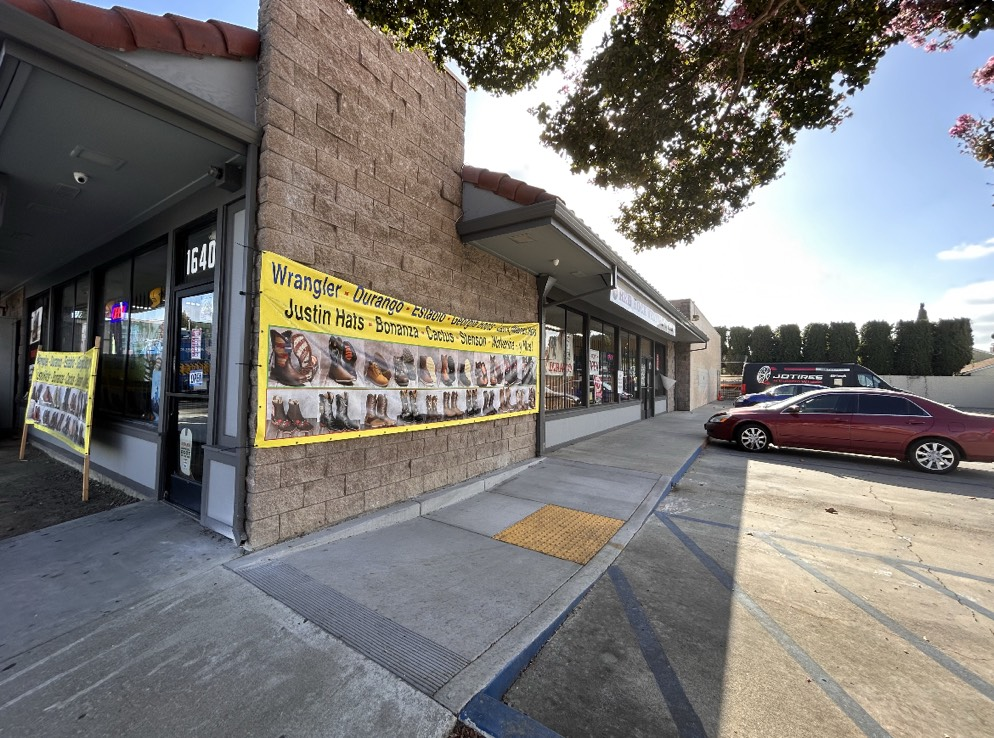
Visítenos Visit us
1640 Alum Rock Ave
San Jose, CA 95116
In Little Portugal on Alum Rock Ave, with a parking lot right in front of the store.
- Wheelchair-accessible entrance and parking lot
- Apple Pay, contactless payments and credit cards
- Se habla español
Horario Hours
- Monday lunes
- 10 AM – 7:30 PM
- Tuesday martes
- 10 AM – 7:30 PM
- Wednesday miércoles
- 10 AM – 7:30 PM
- Thursday jueves
- 10 AM – 7:30 PM
- Friday viernes
- 10 AM – 8 PM
- Saturday sábado
- 9 AM – 8 PM
- Sunday domingo
- 10 AM – 6:30 PM
¿Tienen mi talla?
Looking for a size, a brand or a hat style? Ask before you drive over.